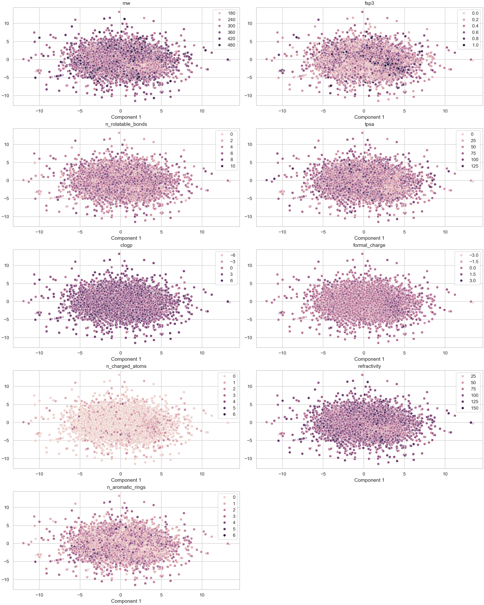

Curation Report
Time: 2024-06-03 11:46:53
Version: dev
mol_curation
Logs
- New column added: MOL_smiles
- New column added: MOL_molhash_id
- New column added: MOL_molhash_id_no_stereo
- New column added: MOL_num_stereoisomers
- New column added: MOL_num_undefined_stereoisomers
- New column added: MOL_num_defined_stereo_center
- New column added: MOL_num_undefined_stereo_center
- New column added: MOL_num_stereo_center
- New column added: MOL_undefined_E_D
- New column added: MOL_undefined_E/Z
- Default `ecfp` fingerprint is used to visualize the chemical space.
- Molecules with undefined stereocenter detected: 17111.
Images
Distribution in Chemical Space - ECFP
Molecules with undefined stereocenters

There are 17111 molecules with undefined stereocenter(s). It's recommended to use and check the stereoisomers and activity cliffs in the dataset.
deduplicate
Logs
- Deduplication merged and removed 0 duplicated molecules from dataset